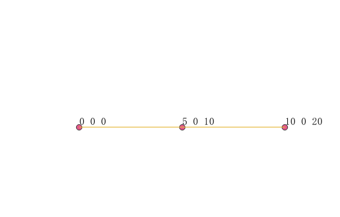
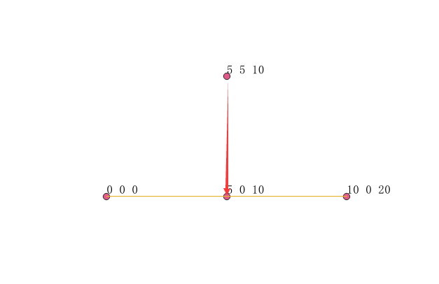

ST_InterpolatePoint
方法功能描述
已知一个带M的LineString图形，及其任意点，通过插值计算返回该点对应的M值。
函数定义
float8 ST_InterpolatePoint(geometry line, geometry point);
参数定义：
line:输入的一个带有高程值z的图形必须是LineStringM类型，其他图形类型还有高程z都不支持！！！
point：任意点，可以在线上或者不在线上。
返回值： 返回参数点对应的测量值。
应用示例
- 点在线上

SELECT ST_InterpolatePoint(st_geomfromtext('LINESTRING M (0 0 0, 10 0 20)'), st_geomfromtext('POINT(5 0)'));
ST_InterpolatePoint
--------------------------
10
- 点不在线上

SELECT ST_InterpolatePoint(st_geomfromtext('LINESTRING M (0 0 0, 10 0 20)'), st_geomfromtext('POINT(5 5)'));
ST_InterpolatePoint
--------------------------
10
说明：当点不在线上时，实际是先计算参数点到线上最近的点，然后使用最近的点计算测量值M，最后这个M值赋予参数点，结束。